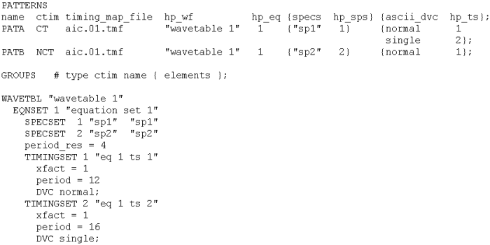

The Output Columns
ait generates an output version of the global configuration file which contains additional columns and can be used when an existing timing is to be extended or modified by calling the ASCII interface from a user procedure.
The following figure shows the output version of the PATTERNS section displayed in The Global Configuration File (*.aic):

The following list explains all the output columns of the PATTERNS section . The columns are ordered alphabetically by their name.
- hp_eq: specifies the equation set that was generated for the pattern. Within a continuous clock setup, it specifies the equation set of the data port. For the definition of a continuous clock setup, see Keeping the Clock Alive.
- hp_specification: specifies the name of a multi-port specification (not shown in the figure).
- hp_sps: specifies the spec set that was generated for the pattern. Note that this column is only generated if the specs column was present in the input version.
- hp_ts: specifies the timing sets that were generated for the ASCII device cycles of the pattern. Within a continuous clock setup, it specifies the timing set of the data port. For the definition of a continuous clock setup, see Keeping the Clock Alive. This information is transferred to the pattern configuration file (*.vbc).
- hp_wf: specifies the wavetable that was generated for the pattern. This information is transferred to the pattern configuration file (*.vbc).
- pll_hp_eq: specifies the equation set of the clock port within a continuous clock setup (not shown in the figure). For the definition of a continuous clock setup, seeKeeping the Clock Alive.
- pll_hp_ts: specifies the timing set of the clock port within a continuous clock setup (not shown in the figure). For the definition of a continuous clock setup, seeKeeping the Clock Alive.
- timing_map_file: specifies the timing map file that was generated for the pattern.
In addition, the output version contains at the end a more explicit description of the timing (see previous figure). This description is only a kind of commentary on the PATTERNS section and must be deleted before the output version is used as the input version for a second run of ait. See also Making Use of the Output Version.
By default, the output columns are ignored if you use the output version for a second run of ait. But you can activate them as input columns with the -Mm option of ait. For more information see Controlling Set Numbers and Wavetable Names.